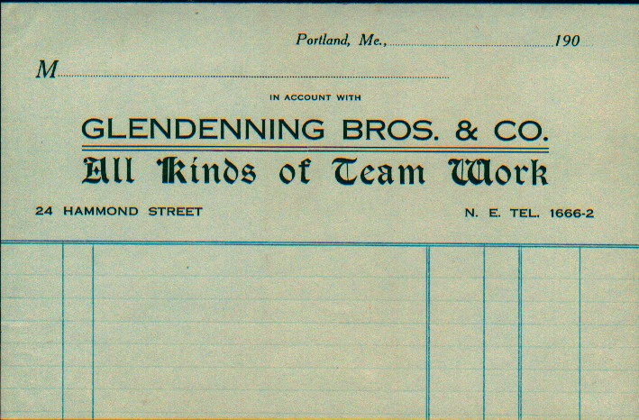

SOJOURN IN THE USA
For years, Maritimers flocked to the USA to find work; this trend did not really change until after WW2 when Maritimers travelled west, first to work in the plants in Ontario but later to work in the oilfields of Alberta. The Glendenning and Watling families were no exception. I am told three times a day, trains left Prince Edward Island and made connections with trains to the ABoston States.@
Many Maritimers found their first jobs in the woods of Maine and New Hampshire, initially in winter only. Many returned home to fish or farm in the summer; later many found year-round work and eventually became permanent residents. Young women, including my Mother and, later, my two sisters went to Portland or Boston and found work with families looking for a nanny, a cook, a housekeeper or a Ajill of all trades.@
In the late 1800's, Portland was the terminus of the Atlantic and St. Lawrence Railroad (Grand Trunk), a line to Montreal which "made Portland into Canada's winter port". Other heavy industry was to be found in that area of Portland including the building of locomotives and the construction of docks to accommodate transatlantic passenger vessels. Street names St. Lawrence, Quebec and Montreal for example further reflect the Canadian connection.
Some 1500 buildings were destroyed and 12 000 people left homeless in the great fire of 1866. New and presumably better housing was constructed and it appears that lighter industry began to locate in that area. Around the turn of the century a few grand homes began to appear on the Promenade which provided a sweeping view of the water. Construction provided many jobs and it is likely that Dad worked in the construction trade field. In fact, Walter recalled a trip to Portland with Dad and a visit to a construction site to see some friends.
In the context of all the industrial activity and development, it is not surprising that Portland attracted Maritimers, including the Glendenning and Watling families.
Elmer Alton Glendenning
Glendennings seemed to have been well established in Portland at the turn of the century with Venetia, the oldest child likely having played the role of "host" as each new family member moved south. Venetia's address was Falmouth Foreside which is just north of Portland and between Portland and Freeport. Falmouth Foreside still exists although it may be considered part of the Portland metropolitan area.
We do not know the year that Dad went to the USA or where he went first or what he did. Other brothers and sisters known to have lived in Portland, at least for a while, included Venetia (Mrs R. L. Doring), Margaret (Mrs Lucas Marsen), Frank, Raymond and Guy. Aunt Maude and Uncle Jim Cormier also worked in the USA, I believe in Lincoln, New Hampshire.
The family must have valued education; Uncle Chip took a business course, Uncle Guy studied but did not finish dentistry, Aunt Margaret was a nurse. Dad may have taken some technical courses; I remember some technical books at home.
My guess, and it is only a guess, is that Dad first worked in the woods in Maine and New Hampshire. Walter thought that Dad worked in the woods near Skowhegan and Millinocket, Maine. I believe that he also worked in or near Berlin, New Hampshire.
Dad, and presumably his brothers, also lumbered in New Hampshire prior to 1910. Because they took their horses, they must have yarded and hauled logs. I believe that they also cut lumber. John recalled Dad telling about a "record" of lumber cut (marked on a camp wall) that stood for many years. Ken thinks that Uncle George Watling, Mum's
brother, also worked in the woods with Dad and recalls Uncle George telling about the "record" set by Dad and his crew. George (Elbridge) Watling told Ken that both his father,
George, and James A. Watling worked in the woods with Dad. Ramsay MacLean, of Upper Black River, worked with Dad in New Hampshire. I recall John saying that he thought that Ramsay had been yarding with a horse or a team and, and did not install a bridle to slow down the sled on a steep hill, and the logs got away from him and dragged a horse down the hillside killing it. From my reading of lumbering on the hills in New Hampshire, this would not have been an unusual event. According to Herbert Daley, Herb Daley, Dad’s first cousin, also worked with Dad in New Hampshire and, perhaps, in Portland.
Prior to 1910, Elmer and his brother, Frank, operated a business in Portland under the name Glendenning Bros. & Co. (All Kinds of Team Work). Robert Glendenning told me that Uncle Guy also worked in the cartage business; whether he was a partner is not known. They operated from 24 Hammond Street, Portland, Maine. Walter, and others, remember Dad telling about delivering ice to homes on a regular basis. Delivering meant that they opened the door and put the ice in the icebox inside the house. Although I always thought it was only Dad and Uncle Frank in the trucking business, other brothers may have also been involved.
According to Lillian, Dad continued to send money to his parents from the USA until he was 30 years old.

Wausau, Wisconsin
We have no record of when Dad went to , Wisconsin, however, on January 25, 1910 he mailed a letter from to Jeannie A Glendenning in Portland. A postcard picture dated July 18, 1910 shows work being done at a dam in Rothschild, Wisconsin. He also gave , Wisconsin, as his address when he made an entry in Mum's autograph album on September 18, 1910, a month before they were married. In fact, Dad=s is the only entry in the album prior to the wedding which makes me think that he may have given it to Mum as a memento from . He may well have simply stopped in Portland for a few days on his way back to the wedding.
Quite a number of dams were built in Wisconsin at this time. Some were built to improve the rafting of logs; others were built for the generation of power. Rothschild is a few miles south and east of .
JANE ELIZABETH JARDINE WATLING
Jane Watling was born, presumably at home, at the Meadows, Upper Black River, New Brunswick on February 28, 1890. Although her name was Jane, it seems that Dad always called her Jean. This may account for the fact that the Watling side of the family continued to call her Jane (or Janie as Uncle Ern called her) while the Glendenning side of the family referred to her as Jean. I remember Mum saying that Dad referred to her as "Jeannie with the light brown hair". Agnes has an annual report from St. Stephen's Presbyterian Church (now United Church), which shows the name as Jane. .
Jane was the second youngest of a family of eight born to Jubal Watling and Grace MacAskill MacDonald. She was named after Jane Elizabeth Jardine who married Donald Cameron (Cameron Russell=s grandmother) A few years ago when visiting Francis and Phyllis MacNaughton in Vancouver, Phyllis showed a framed, handmade embroidery (?) made by Jane Elizabeth Jardine.
When Mum was about 10 years old, the family moved from the Meadows to the Branch. We know that she went to school in Upper Black River; it is unlikely that she went or went for very long to the school at the Branch. I remember Mum saying that her mother would take her from school to help Aunt Elspie MacNaughton who had a young and growing family and needed help.
Portland, Maine
Jane Watling arrived in Portland on January 24, 1908 just prior to her 18th birthday. In the same way as Maritimers now do to Ontario, points west or overseas, in those days young people went to "the Boston States". Young women frequently were employed to look after children and to do housework.
The exact date that of her arrival in Portland is known only because she arrived there on the day that the City Hall burned. I have since confirmed, through a phone call to the Portland Public Library, that the fire occurred on January 24, 1908. (I also recalled Mum saying that she could have gone to Walter Glendenning's funeral (which was on February 14, 1908.)
Jane arrived at the train station in Portland in the early morning and waited for her brother, George, to meet her. Apparently he came to the station but did not recognize her. She had grown up while he was away from Black River. Her brother Jack also worked in Portland at that time and likely there were many cousins. We also know that her brother Jim worked in Portland in a chemist/pharmacy, and also in photography, but whether he was there at that time we do not know.
Among Mum’s possessions was an envelope mailed in , Wisconsin addressed in Dad’s handwriting showing Mum’s address as 130 Emery Street, Portland.
We think that Mum worked for a Mrs. Jennison and looked after her two sons, Marshall and Brian. We do not know the dates. In 1952, John and Mary took their son, Frankie, to Boston to see a doctor. Mum and I went along. While there, we visited a friend of Mum=s. It may have been Mrs. Jennison. She lived on the second or third floor of a brick apartment building on the southwest side of Boston. (Worcester near Framingham, perhaps ?)
We think that Mum worked for a Mrs. Jennison and looked after her two sons, Marshall and Brian. We do not know the dates. In 1952, John and Mary took their son, Frankie, to Boston to see a doctor. Mum and I went along. While there, we visited a friend of Mum=s. It may have been Mrs. Jennison. She lived on the second or third floor of a brick apartment building on the southwest side of Boston. (Worcester near Framingham, perhaps ?)
Friends
Among the friends identified through old family photos are the following:
Mrs. Jennison, I believe was the person Mum worked for when she went to Portland in 1908. Presumably Mother looked after the children - there appear to have been 2. Marshall Walker who was born, I think, in 1906; William Brackett who was born about 1908 and graduated from high school in Portland in 1925. In 1949, I think, we (Mum, John< Mary, Frankie, Rankine Smith and I) visited Mrs. Jennison who then lived in an apartment building in Worcester, Mass. Just outside Boston.
The Ratcliffe family (presumably the Goldie Ratcliffe with whom maintained correspondence after returning to Canada) family was living at 3437 Wildwood Ave., Cleveland, Tenn. In 1913. They appear to have had at least two children: Bernice Naomi born in 1913; Vance born in 1915.
The Kennedy family lived at one time in New Haven, Conn. Based on the photos, they likely also lived in Tennessee. We know of at least two children: Bernice born in 1912; Harmas (?) Lee Reginald born in 1912 - 1914
One photo is of Harmas Lee Reginald Kennedy and Vance Ratcliffe was taken when they were youngsters (under two years of age). Obviously the families were friends.
Mr. and Mrs. Courtney and a son Lennie who likely lived at the time in Tennessee or Alabama.
Mrs. Lawrence who appears to have had at least 4 children: Helen, born about Jan or Feb. 1914; Henry (perhaps also known as Harry) the oldest of the children; John born Nov. 23 1909; Elizabeth born in Jan or Feb 1914
Nellie Fountain provided a photo taken in Portland, Maine.
Millie Tredenic, I believe, was from Prince Edward Island. The phone book shows people by that name living on PEI today
In an autograph album we find the following:
Amy Usher, Bonny Eagle, Maine - Dec 29, 1910
Alta M. Usher, Bonny Eagle, Maine - Dec. 29, 1910
LaMont C. Usher, Bonny Eagle, Maine - Dec. 29, 1910
Gladyce Pearle Beane(?), Readfield, Maine - Jan. 2, 1911
Willis A. Sawyer, West Buxton, Maine
Leola S. Blake, Buxton Ctr. Maine - Jan 31, 1911
Frances(?) Davis, Oct. 13, 1911
Goldie Ratcliffe, Goforth Camp #2, 3437 Wildwood Ave, Cleveland, Tenn.
Mae Franke (Miss), Pleasant River, Queens Co, Nova Scotia but also gives Parksville, Polk Co., Tenn. - April 27, 1911
Mrs. Stanley Franke, Pleasant River, Queens Co. Nova Scotia but also Parksville, Polk Co, Tenn. - April 27, 1911
M. J. Miller, River Louison, Rest. Co, NB - June 27, 1913
Hughey (Mac MacDonald). Kennys Hill, Wed. Nov. 13, 1912
LIFE TOGETHER IN THE USA
We do not know how and when Jane and Elmer met. It is possible that they met through Uncle George Watling if, as we think, she stayed with him when she first went to Portland and if, as I also believe, he worked with Dad in New Hampshire (and perhaps in the cartage business in Portland). I recall Mum saying that she could have gone to Grandpa Glendenning's funeral (Feb. 14, 1908) but, as I recall, she kept someone's children. (Doring's, MacLean's, or ?). Jane was always active in church work and it is possible that they met at a church function. On the other hand, there were hundreds of Maritimers working in the USA at that time and it is not unlikely that there was a network Maritimers in the Portland area.
Elmer and Jane were married at the home of her parents, Mr. and Mrs. Jubal Watling at Little Branch by Rev. George Grant on October 18, 1910. Venetia recalls Dad telling about travelling by train from Portland to Loggieville, then by horse and wagon to Little Branch. Apparently, at that time, there was a corduroy road from the Napan Road down through the woods, which joined the Point Aux Carr Road near Palmers. From there he would have crossed the Victoria Bridge to Hexham and from there to the Watling home at Little Branch (where Neil now lives). Lillian said they honeymooned in Montreal. They returned to Portland (Bonny Eagle) after the wedding.
Bonny Eagle, Maine
Mum had a small autograph album with the first entry dated September 18, 1910. Who knows, perhaps Dad gave it to her as a gift when he returned from , Wisconsin. In any case, his is the first autograph in the book, although not on the first page, and he gave his address as , Wisconsin. The entries contain good wishes from friends presumably because it was known that she would soon be leaving Portland.
Inside the front cover, dated December 1, 1910, Mum gives her address as Bonny Eagle, Maine. When passing through Portland in March of 1993, I enquired about Bonny Eagle. Apparently there is a Bonny Eagle Lake and a Bonny Eagle High School but Bonny Eagle, as an address, appears to have disappeared. Bonny Eagle Lake is about 12 miles west of South Portland.
Mum also maintained a Journal or record of purchases for a number of months starting in January 1911. (Perhaps a New Year's resolution?) The initial address on the front page is Bonny Eagle, Maine, however, Parksville, Tennessee, was added later on the same page.
Some of the entries shown for January, 1911, while still in Maine, include the following:
o From Preston Usher was purchased
- 1/2 cordwood for $3.00
- Milk at 19 cents per quart
- 2 ft. green wood for $1.50
o From Palmer C. Holmes was purchased:
- 5 gal of oil for 45 cents
- one gal of molasses for forty cents
- 1 lb. soda crackers for ten cents
- 1 lb. rice for 10 cents
o From E. Whitehouse was purchased:
- 1 bag of Royal Flour for 80 cents
- 1/2 bu. potatoes for 25 cents
- 10 lb. turnips for 15 cents
- 2 cans of tomatoes for .25
- Pop corn for .20
- 12 eggs for .25
- clothes pins and yeast cake for .08
o Six times during the month of January 1911, fish was purchased from Martin for a total of $1.78
o During the period of Jan. 12 to Jan. 26, the following purchases were made from Fred Breau:
- Steak at .18
- Sirloin steak at .20
- Ham
- Pork at .15
- Roast for .60
- 5 lb. soup bone for .14
o There were a number of miscellaneous entries during January including:
o - Rent to Mrs. R. $15.00
- Shoe nails .10
- Tickets to drama for .40
- Candy for .10
Parksville, Tennessee
Parksville is in the south east corner of Tennessee about 30 miles east of Chattanooga and 15 or 20 miles east of Cleveland. It is located on the Ocoee River which rises in the mountains of eastern Tennessee, western Georgia, and northeastern Alabama. The Ocoee River flows westward into the Tennessee River at Cleveland. Most of the buildings in the original town of Parksville were moved to make way for the dam and the original site is now under Parksville Lake. (The Ocoee River above Parksville was the location of some of the rafting events for 1996 Olympics held in Atlanta, Georgia). Parksville is in Polk County whose capital is Benton about seven miles distant.
Most of the technical information, including the quotations which follow, comes from an undated paper (probably published in 1913) by the Tennessee Power Authority (not to be confused with the Tennessee Valley Authority, TVA, which was formed much later. The document includes the following selected comments about developments on the Ocoee River:
"The Company owns the flowage rights and adjacent property from Ducktown to Parksville, a distance of twenty-six miles with a total fall of 710 feet in this distance...
The total fall of 710 feet will be utilized in three distinct plants. The first, or lower development, will utilize a concrete dam 110 feet high across the gorge between Sugar Loaf and Bean Mountain; the second and third developments will be accomplished by diverting the water into canals carried along the bank of the stream to a point where the elevation is 250 feet above the natural bed of the river, water being drawn from these canals through steel pipes into the power house under a head of 250 feet...."
Actual work was commenced on the lower, or Ocoee No. 1, development in August, 1910. The first concrete was placed in the dam in February, 1911 and the plant started January 27, 1912. Apparently there had been considerable talk of constructing dams on the Ocoee River for some time site had been selected and surveyed much earlier.
"The dam was built for about one million dollars. The dam still stands and still produces power. Ocoee #1 and #2 were built for the Eastern Tennessee Power Company. These were bought out by the Tennessee Valley Authority which came into being about 1930 to undertake the development of the entire Tennessee valley from Knoxville, Tennessee to Kentucky where the Tennessee River empties into the Mississippi River.
The dam is what is known as the gravity type. It is built of Cyclopean concrete, is 110 feet high at the spillway section and 840 feet from bank to bank. The overflow or spillway is 230 feet long and the entire structure contains 160,000 cubic yards of concrete ...
... to insure the welfare of the fifteen hundred odd men employed on the work, it was necessary to build a town back in the mountains, having practically all the features of a city, with waterworks, stores, hospital, police regulation, etc.
Material was practically all handled by machinery. The rock was blasted from the side of the hill, one-fourth of a mile below the dam, loaded on cars by steam shovels, dumped into the crusher plant, carried to concrete mixer, dumped into buckets, loaded on flat cars, hauled by dummy engine to derricks and placed by dumping from the bottoms of the buckets. From twelve to fifteen hundred cubic yards of concrete were frequently placed in a single day ...
Many people were moved from Parksville to make room for the building of the Parksville Dam.
A second powerhouse was built a few miles, perhaps 8 or 10, up river at Caney Creek. Construction commenced in May 1912 and was completed in October 1912. Many people who had worked on the Parksville dam were called back a few months later to work on the second dam and flume line. From entries in the autograph album, we know that Mum and Dad were among this group. We do not know if there was a break in Dad's employment and, if there was, if they stayed in Parksville or went somewhere else until work resumed. The reason for thinking this is that entries in her journal end on November 8, 1911 and commence again on April, 1912. There are no entries for May, 1912, however, entries resume on June 1 under the heading of Goforth Creek (which flowed into the Ocoee near the powerhouse for Dam number two.)
"A dam thirty feet high is placed across the gorge, five miles above the backwater of the lake. The canal or flume, supported on a bench cut in the side of the hill for a distance of five miles, discharges into a terminal reservoir, and from there under a head of 250 feet through steel pipes to the powerhouse containing three 10,000 horsepower units".
The water to drive the turbines was carried by flume line for a distance of almost 5 miles before it drops 250 feet into the power station. The flume line is situated on ledges blasted out of the side of the mountain and on trestles where it crosses ravines and gullies. The flume line is fed from a small diversion dam and only drops 17.5 feet in the 5 miles. The flume was made of "long leafed pine" timber, like railway ties, and was cut locally. It is actually a box about 10 feet high, 15 feet wide ad 5 miles long. Apparently a small "dinky" railroad ran on top of the flumeline as the flume progressed. This is not to be confused with the regular rail line which ran from Parksville to Cleveland and parts north.
Over the years the flume line has been replaced once or twice and is now designated as an historic site.
There were no roads to Caney Creek and no cars in the village. To reach the second dam site, Caney Creek, one travelled up-river from Parksville by boat then up the incline in cars pulled by heavy cable. A suspension bridge crossed Caney Creek to Goforth Creek which is across the river from where the flumeline was built.
Caney Creek, Greasy Creek and Goforth Creek are up river from Parksville and were the residential areas for people working on the flumeline and the second power plant. Other names that sound familiar include Cookson Creek and Ducktown. The third development, although planned at the same time, was not actually built until 1941-1943.
On February 16, 1993, Carol and I visited the Parksville area. Our first stop was at the County Historical Library in Cleveland where we discovered a small pamphlet describing the building of Ocoee #1 and Ocoee #2 and life in that area at that time. I have a photocopy of the booklet in my files.
We also met a woman, Edna Brewer, 883 Highland Avenue, Cleveland, Tennessee, 37311, whose father had worked at Caney Creek and who, herself was born at Greasy Creek in 1924. Her father had worked at the generating station after the dam was constructed rather than during construction of the dam. From Cleveland, we drove to Benton but found little. We did, however, pick up some general historical information about the area.
Then we drove to Parksville where I took pictures of the dam and visited the administrative offices for the TVA. We then drove up the river past Caney Creek, Goforth Creek, and Greasy Creek and were able to see the flume line. Unfortunately the road was narrow and winding and there were few places to pull off and take pictures.
The Ocoee River and its drainage area is now in a National Park area. Settlements at Caney Creek, Goforth Creek, and Greasy Creek are overgrown. There is no sign that anyone ever lived there. I was told that the tennis courts which once existed there can still be found, however, everything else is overgrown.
The "new" Parksville, relocated when the dam was built, existed as an incorporated town/village until about 1990 and could be found on maps. Recently, however, people were no longer posted to work at Parksville and the power station is operated remotely from another site. Most of the houses have been torn down or moved. Presumably they were all company houses. Today, only three or four of the original buildings still stand. They are located on a gentle slope back from the river below the dam. Remaining buildings are used for administrative purposes. Parksville was connected to Cleveland by rail.
Mrs. Grace Karaivanoff Matlock, who wrote the booklet, the "Rebirth of Parksville - 1909" moved to Parksville in April 1911 about two months after Mum and Dad. Her husband was an engineer. From pictures that we have and her descriptions of life at Parksville, it is likely that the engineering staff lived in better quarters than Mum and Dad. Construction on Ocoee #1 and Ocoee #2 was carried out by the J.C. White Construction Company of New York (and perhaps by the Clark Company of New York although I believe the latter company did the preliminary surveying work and the purchase of the land only). As I recall, this was also the same company which Dad worked for in Hampton, Virginia and likely at Muscle Shoals, Alabama. It would be interesting to know, also, if they carried out construction work also in Connecticut.
Benton is of interest because it appeared to be a larger town than Parksville no doubt because it was the county seat. Quite a number of the photographs in Mum's collection were taken by a photographer from Benton. That firm is no longer in business although I met a woman who was a niece of that photographer.
I have a lodge book in which Dad wrote
"I was made a Master Mason the last Saturday night in 1911 at Ocoee Lodge, No. 212, Benton, Tennessee".
The lodge is still active. It is now housed over the Post Office, however, I spoke with a lodge member who said it used to meet in an old frame building which was torn down about 40 years ago.
I also have a copy of a book called "The Standard Masonic Monitor" published by McCoy Publishing and Masonic Supply Company, 46 John Street, New York, 1911 with the following inscription in my father's handwriting:
"Presented to E.A. Glendenning by James Cartey (Cortey?) of Knoxville, Tennessee".
An address among Mum's mementoes includes the address of Mr. and Mrs. Ratcliffe, #3437 Wildwood Ave., Cleveland, Tennessee. Mum maintained contact with Mrs. Ratcliffe and her daughter, Goldie (Kennedy) for many years. After Mum died, Venetia corresponded with Mrs. Kennedy. We found Wildwood Avenue but couldn't find #3437 although the area was still residential with some small businesses.
An entry in the Journal states "Commenced housekeeping, Parksville, Tennessee, Feb. 11th, 1911" Lillian recalls Mum saying that she sat on packing boxes while the house was being built.
Purchases paid for by cash for the first few days after their arrival in Parksville included:
Feb. 11 Dishes .60
Bread .20
Tea .30
Sugar .35
Pickles .12
Pepper .05
Salt .10
Beans .25
3 doz. eggs .60
13 lbs. pork 1.95
Milk .10
1 lb. butter .22
Potatoes .25
1 can peaches .18
Feb. 13 1 oil can .15
1 gal. oil .25
Shredded Wheat .15
Cream of Wheat .18
B... .05
Matches .05
Bread .15
Apricots .25
Feb. 14 Dishes 1.50
1 can salmon .15
1 can beets .10
1 bottle mustard .12
1 Can milk .10
Feb. 16 Flour 1.00
Baking powder .10
Onions .12
Beefsteak .54
Coffee .40
Chipped beef .15
Lard .60
Pork .18
Butter .22
Bread .05
Apricots .25
Bananas .05
On February 17 they bought a frying pan (.35) and a can opener (.10). Three days later they bought a lamp chimney for .10. Their grocery bill from February 11 to 28 was $19.26
Their grocery bills for the next few months were as follows:
March 23.42
April 27.75
May 23.52
June 26.80
Records for purchases for the next few months are not complete, however, a new entry on page 73 for June is headed Goforth Creek. This was the time, presumably, when they moved from Parksville to Goforth Creek.
During September 1911, ice was purchased 19 times for a total of $2.89. entries in the journal from Parksville end on November 8, 1911 and pick up later at Goforth Creek.
The following entry was found on page 79 of the Journal:
"E Cocherau (?) came to Board Sept. 12, 1912.
18 days board @ 66 2/3 $12.12
October 26 days $17.50
29.22
Credit 10.00
$ 19.22
Their boarder would have been with them at Goforth Creek. Having a boarder is consistent with the information provided by Mrs Karaivanoff-Matlock who said that people were expected to provide room and board for workmen.
I recall Mum telling a story of a Mr. Ayres, a supervisor, who was stabbed to death by a workman who he had reprimanded. The murderer jumped into the river but his body was recovered sometime later.
Mum's sister, Janet Watling visited her in Parksville when Grace was born (September 23, 1911. (Lillian recalls that Dad sent Aunt Janet money for train fare.) Also her brother Ernest Watling and a cousin, Hugh (Mac) MacDonald, were in Parksville in 1912 and I believe that both worked there. Mac MacDonald was killed later during the construction of the Newcastle (Morrissey) Bridge.
Uncle Ern Watling told that Dad always carried a short piece of a peavey stock while on construction sites. Dad said it was because of snakes. Uncle Ern said that it was because of having to deal with rough construction workers. Aunt Janet mentioned in a postcard to her father that the workers were "quarrelsome".
The latest entries in Mum's autograph album are from her brother Ernest and another from "Hughy" dated November 13, 1912. ) This likely indicate that either she and/or the authors were about to leave Parksville.
We are not sure exactly when Mum and Dad left Parksville, however, the dam at Parksville was completed in December of 1912. It is likely that they moved up-stream around that time to work on the second dam, which was completed in late 1913. Mum was back in NB by September 1913 when Walter was born; we do not know if Dad came back at the same time. We know that Dad purchased the Jessie MacDonald property on July 21, 1914 and was postmaster from November 1914 to August 1916.
Although we do not know exactly when Dad and Mum returned to New Brunswick, we know that Dad purchased the property at Little Branch from Alexander and Ethyl MacDonald on July 21, 1914. Presumably they lived there for a couple of years. While Grace was born in Parksville Tennessee in September, 1911, Walter was born at Little Branch in September of 1913 and Venetia was born there in May of 1915. Post Office records show that Dad was Postmaster at little Branch from November 1, 1914 to August 1, 1916. Lillian was born in North Hampton Connecticut on January 8, 1917. Based on my review, they would have returned to Canada at the end of 1912 or in 1913 and left in late 1916 – a period for 2 to 4 years.
New Haven, Connecticut
We have a picture of Mum with Grace in New Haven, Connecticut. Grace looks to be between one and 2 years old at the time and Mum does not look to be pregnant in the picture. It is likely that they moved to New Haven at the end of 1912 or early in 1913. If this is true, they would have been in New Haven for upwards of 4 years.
They lived at 3 Perkins Street, Fairhaven, a suburb of New Haven, Connecticut where Lillian was born on January 8, 1917. This location was close to the Armstrong School which Grace attended. Lillian mentioned that Patricia had visited the address.
Hampton, Virginia
In 1918, Dad and Mum were living in or near Hampton Virginia where Dad was in charge of the clearing land for Langley Field. Langley Field was a naval airbase. Venetia and Lillian still have their passes to allow them to visit Langley Field military base). They cleared some 800 acres of land. Dad travelled about on horseback while supervising the clearing and received a hernia as a result of a fall.
It was in Hampton, Virginia, that Margaret Virginia was born on January 13, 1918. She died on January 18, 1918 and is buried in the cemetery beside the Episcopalian church. John, Mary, Margaret, Jeannie, Carol and I visited the cemetery at Christmas, 1958; Ken and Verne and Cam and Venetia visited the cemetery during one of their trips to Florida.
Dad worked for the J.C. White Construction Company and I recall seeing a letter to Dad from the US Department of Defence commending Dad for his efforts during WW1. George (Elbridge) Watling told Ken that his father, George Watling, worked with Dad at Hampton, Virginia.
Muscle Shoals, Alabama
Muscle Shoals is in the northwestern part of Alabama near Huntsville and Florence on the Tennessee River. Although family records refer to it as" Mussel Shoals", the correct spelling is Muscle Shoals. Tourist information about the area states that the Tennessee River provided a natural habitat for mussels or shellfish and that, presumably, accounts for the name. The spelling of place names does change from time to time and it is possible that the change from "mussel" to Muscle" occurred since 1918.
Dad and Mum lived for a while in Muscle Shoals, Alabama. A picture, dated 1919 shows Grace, Walter, Venetia and Lillian. Presumably Dad was involved in the construction of Wilson Dam. The Dam was started in 1918 and completed in 1925 and is 4 862 feet in length. It was build primarily to provide electric power for the production of nitrates required for munitions...
Tourist information from the area tells us that
"Wilson Dam straddles the Tennessee River at the foot of a 37 mile stretch of craggy rapids known as Muscle Shoals...
For more than a century, Muscle Shoals - a series if irregular rock formations that formed shallow and often turbulent pockets of rushing current - had stood in the way of navigation and commerce on the Tennessee River...
The construction site consisted of 1 700 temporary buildings, 236 permanent buildings, 185 residential units, more than 165 miles of sewer and service pipelines, and 685 miles of electrical cable.
There were 23 mess halls serving more than 24 000 meals a day, a school for 850 students, an 85-bed hospital and three barbershops.
An average of 111 railcar loads of equipment and materials arrived daily, and more than 800 bricklayers worked at one time under a single roof.
Construction started in February 1918. The first nitrates from the plant were produced on November 25. But the war had ended two weeks earlier - on November 11.
Wilson Dam was only partially completed. It was not finished until 1925 and then only 40 percent of its electric generating capacity was installed. Presumably some electricity was being produced at that time.
Carol and I visited Muscle Shoals, Alabama on February 3, 1994. Today it has a population of 10 000. There was no sign of the "old' part of the city. When Dad was there, it may have been only a large camp for workers at the dam. Muscle Shoals is about 3 miles from the dam site. We tried to find some historical information without any luck. The nearest town of any size is Florence. There is an Historical Society there but we were not able to make contact.
Mum told the story about a man and his son who were driving a team of mules when a thunderstorm struck. The man and the mule were struck by lightening and killed; the son and the other mule escaped. Now that I have seen the Muscle Shoals area, that is likely where the incident occurred. It is cotton country and a likely location.
Abilene, Texas
Dad worked in Abilene, Texas. We do not think that Mum went with him. We do not know the year or the nature of the project. Presumably, however, it had to do with the building of a dam. Walter remembers Dad telling about the long trip to Abilene by train.
On February 7, 1994 Carol and I visited Abilene. The city was established originally as a shipping point for cattle. It now has a population of about 100 000 people. We were able to gather some information about a number of dams built to secure a water supply but obviously, we cannot associate any of them with Dad's period of time there. Perhaps something will turn up later.
According to family lore, Mum and Dad returned to Little Branch in May of 1919. Information about their life at little Branch is included in a separate section.